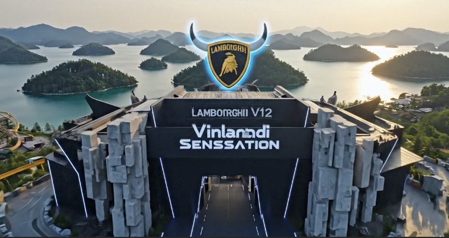

← Retour aux projets
Business Case : Lamborghini Viking Park
> Étude de Marché | Stratégie Marketing | Ultra-Luxe

Contexte : objectifs et problématique
L'étude porte sur l'extension de la marque Lamborghini dans le secteur du divertissement ultra-luxe en Chine.
La problématique était de valider la viabilité d'un parc à thèmes haut de gamme tout en préservant l'exclusivité de la marque.
Rôle :
En tant que responsable de l'étude stratégique, j'ai réalisé :
- L'analyse du macro-environnement (PESTEL) et du micro-environnement pour identifier les opportunités de marché.
- La définition d'une stratégie de Pricing (Écrémage) et d'un mix marketing adapté au segment ultra-luxe.
- La conception d'une gamme de 5 produits dérivés avec une logique de rentabilité immédiate.
Processus : étapes et défis
Le projet a nécessité une immersion dans les codes du luxe chinois :
- Analyse de Marché : Étude de la concurrence et des comportements de consommation des HNWI (High Net Worth Individuals).
- Stratégie de Distribution : Mise en place d'une distribution sélective pour garantir l'aspect prestigieux.
Défi : Équilibrer l'aspect "divertissement de masse" d'un parc avec les standards de rareté de Lamborghini.
Résultats : impacts mesurables
Ce projet a abouti à un dossier stratégique complet validant le potentiel du marché chinois pour des extensions de marque non-automobiles.
Il démontre ma capacité à analyser des environnements complexes pour aider à la prise de décision stratégique.
📄 Consulter l'étude de cas (PDF)